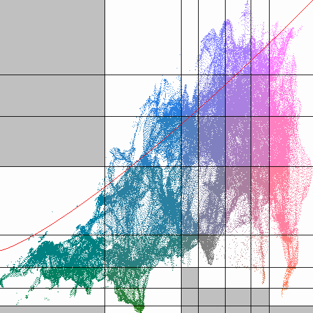

The Scatter Plot is different to the other Maps, as it shows a plot of Temperature vs Humidity:

Where Temperature is the X axis getting hotter from Left to Right and Humidity is the Y axis getting more humid from bottom to top.

Created with the Personal Edition of HelpNDoc: Easy CHM and documentation editor